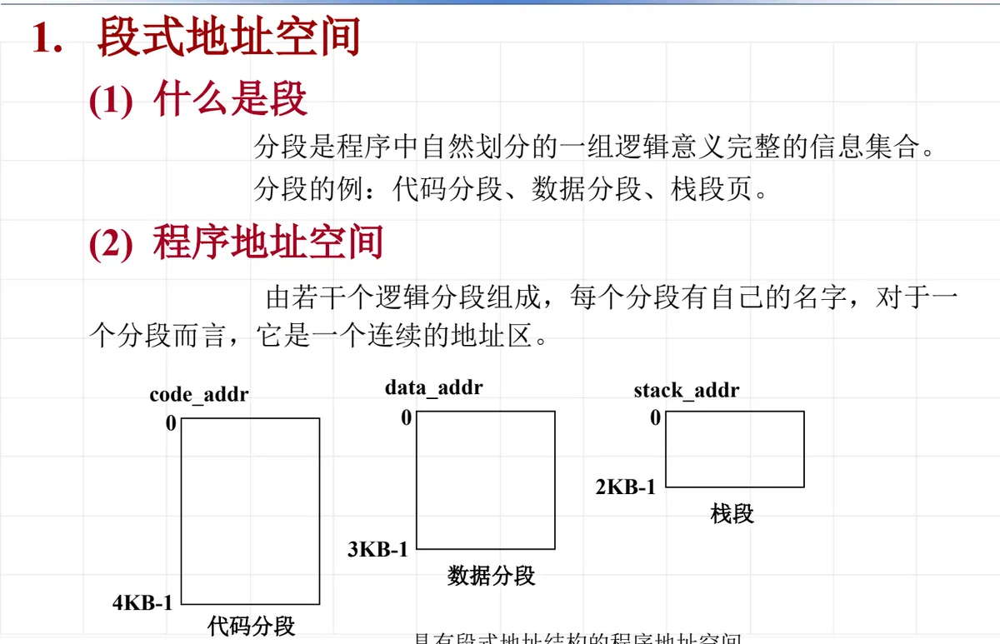
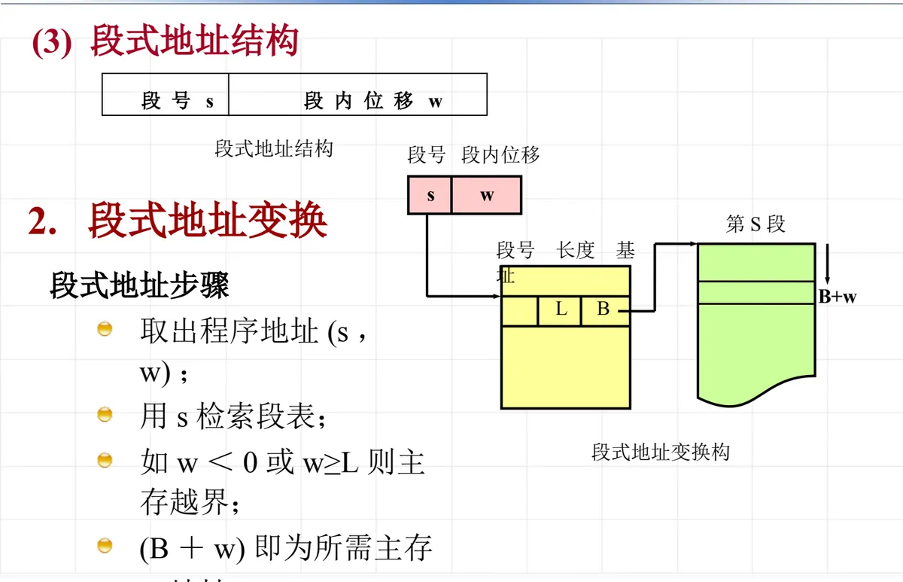
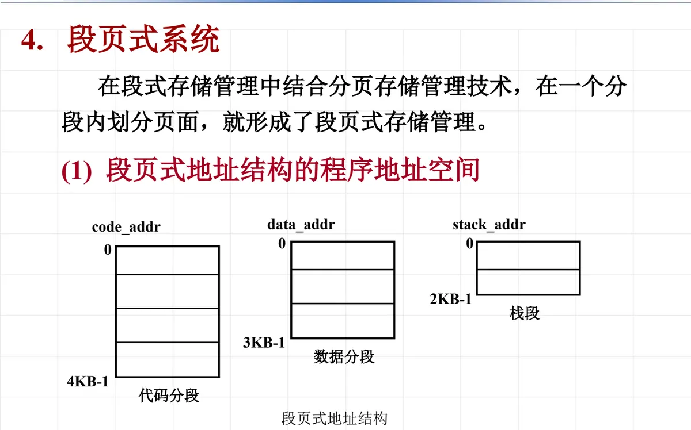
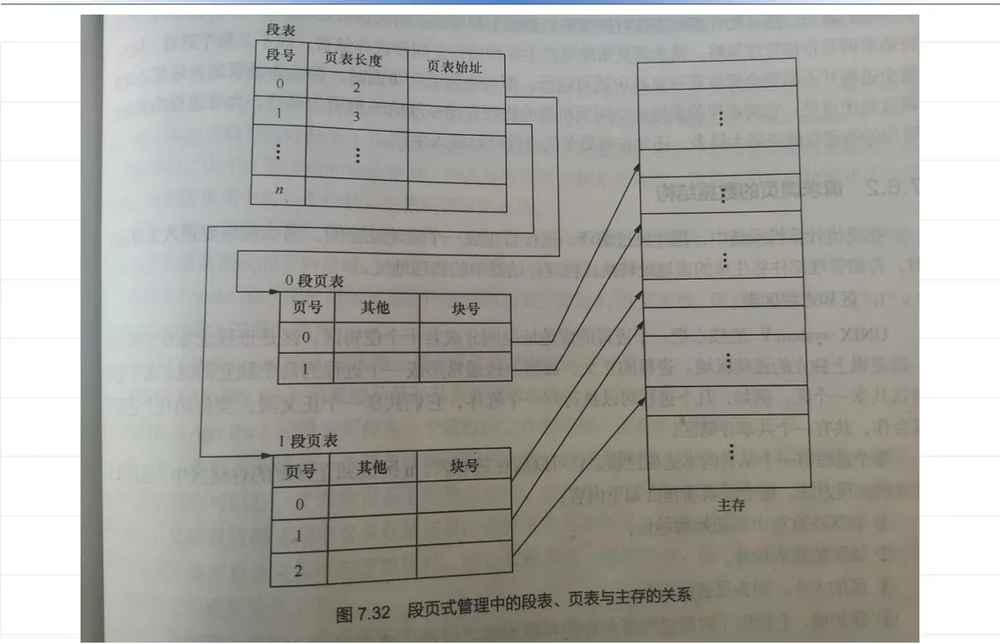
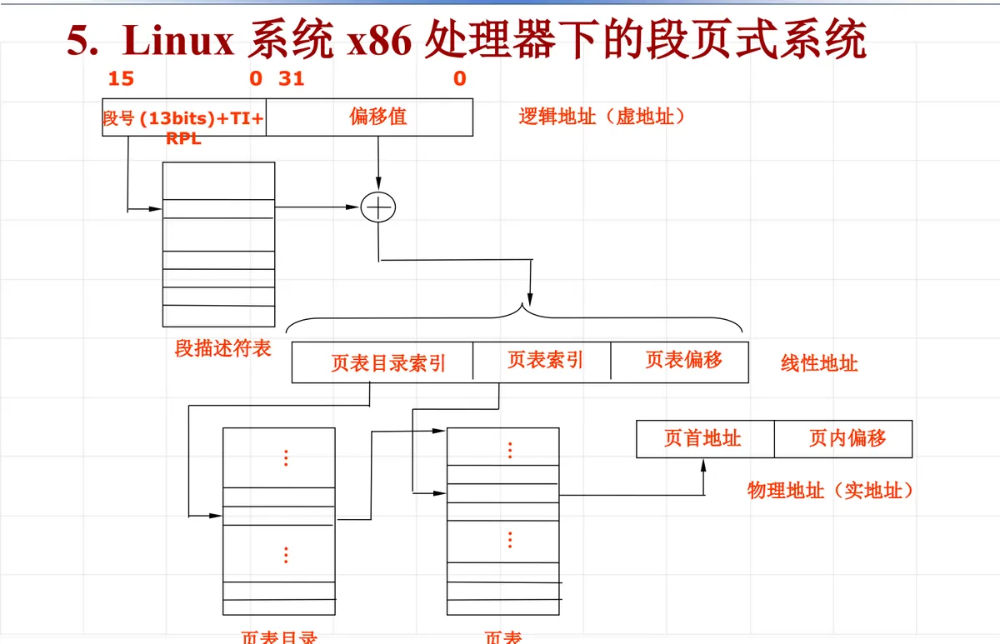

操作系统原理 · 第 7 章 主存管理
7.6 段式及段页式存储管理
段式存储管理把程序按逻辑意义划分成若干段，主存以段为单位分配；段页式存储管理则在分段的基础上再分页，兼取两者之长。这一节先讲清段式地址空间与地址变换，再把页式与段式放在一起比较，然后看段页式系统的结构和它在 x86 处理器上的实现，最后用课件里的一道习题把地址计算完整走一遍。
1. 段式地址空间：按程序的逻辑结构分段
（1）什么是段
页式存储管理把用户程序按固定的大小机械地切成页，切分的单位与程序本身的逻辑结构没有关系。段式存储管理换了一条思路：按程序自身的逻辑结构来划分。分段就是程序中自然划分的一组逻辑意义完整的信息集合——它应当是一个完整的模块、一段完整的代码或者一组完整的数据，而不是被硬切下来的几个固定大小的区域。
最常见的分段是代码分段、数据分段和栈段：主程序与各个子程序可以分别成段，数据成段，运行时的栈单独成段。这样划分的意义在于，把「按逻辑意义组织程序」这件事交给编译程序和程序员，操作系统只按这些分段去分配主存、做保护和共享。
（2）程序的段式地址空间
于是一个程序的地址空间由若干个逻辑分段组成：每个分段有自己的名字（通常也用段号表示），而对一个分段自身来说，它是一个连续地址区——段内从 0 开始依次编址；段与段之间则不要求连续，各段的长度也可以各不相同。

图中代码分段、数据分段、栈段的名字各不相同，各自从 0 开始编址，长度依次是 4KB、3KB、2KB——段长是由段内内容的多少决定的。栈顶指针 stack_addr、数据地址 data_addr、代码地址 code_addr 都是指到某个具体分段内部的某个位置，因此要访问一个信息，必须先指明「哪一个段」，再给出「段内哪个位置」。段式地址空间对用户来说是二维的：一个分量是段名（段号），另一个分量是段内地址。
2. 段式地址结构与地址变换
（1）段式地址结构
段式地址由两部分组成：段号 s 与段内位移 w。段号指明访问哪一个分段，段内位移指明相对于该段段首的偏移量。
[ 段号 s ][ 段内位移 w ]系统为每个进程建立一张段表，进程的各分段装入主存后，它们在主存中的位置就登记在段表里。段表的每个表项记录三项信息：段号、该段的长度 L、该段在主存中的基址 B（即段的起始地址）。
（2）地址变换步骤
有了段表，从程序地址到主存地址的变换按四步进行：
- （1）取出程序地址 (s, w)；
- （2）用段号 s 检索段表，找到第 s 段对应的表项；
- （3）若 w < 0 或 w ≥ L，说明位移超出了该段的合法范围，属于主存越界，转越界中断处理；
- （4）否则 (B + w) 即为所需的主存地址。
四步之中，前两步负责找到段，第三步是保护检查，第四步是地址拼接：基址是段的起点，位移是段内的位置，两者相加就落到主存的真实地址上。越界判据有两条——位移不能为负，也不能达到或超过段长 L，只有落在 [0, L) 区间内的位移才是合法的。

图中第 S 段的表项给出了段长 L 与基址 B，把段内位移 w 叠加到基址 B 上，就得到主存地址 B + w。由于段长 L 是一段一段分别登记在段表里的，同一进程内各段的越界边界可以互不相同，这也是段式保护比页式更「贴切」的地方。
3. 页式系统与段式系统的区别
（1）用户地址空间：一维与二维
从用户（更准确地说是编译程序与地址生成机构）的角度看，两种管理方式给出的地址空间维数不同：页式系统中用户地址空间是一维地址空间，段式系统中用户地址空间是二维地址空间。
页式系统的逻辑地址是一串线性地址，页号与页内位移按固定的页大小自动切开，用户既看不到也不需要参与，所以用户感知到的仍然是一个从 0 连续到末尾的一维空间。段式系统则不同：地址必须由「段名（段号）」和「段内位移」两部分共同给出，缺一不可，用户必须显式说明访问哪一个段，这就是二维的。
（2）分段与页面的区别
| 比较项 | 分段 | 页面 |
|---|---|---|
| 划分依据 | 信息的逻辑划分 | 信息的物理划分 |
| 大小 | 段长是可变的 | 页的大小是固定的 |
| 用户是否看得见 | 用户可见 | 用户不可见 |
| 位移 w 字段溢出时 | 将产生越界中断 | 自动加入到页号中 |
四点区别可以连起来理解：页面是为了便于主存分配而做的物理划分，大小固定，与程序的逻辑结构无关，所以用户不可见；分段是按信息的逻辑意义做的划分，段长随内容而定，用户看得见、也用得着。最见功夫的是最后一行——在段式中，段内位移 w 超过段长说明程序访问越过了本段的范围，这是错误，硬件要产生越界中断；在页式中，页内位移超过页大小只意味着这一页装不下、要访问下一页，于是进位被自动加到页号上，属于正常现象。
4. 段页式系统
分段便于按逻辑单位共享和保护，但段长可变，主存分配时容易留下碎片；分页便于主存分配，却把程序的逻辑结构切碎了。折中的办法是把两者结合起来：在段式存储管理中结合分页存储管理技术，在一个分段内划分页面，就形成了段页式存储管理。
（1）段页式地址结构的程序地址空间
段页式系统对用户仍然呈现段的二维地址空间——用户按段组织程序，段内仍然从 0 开始连续编址；不同的是系统在段内再按固定大小分页，主存以页为单位分配，段的长度不再是主存分配的粒度。因此段内地址被拆成「段内页号」与「页内位移」两部分，程序地址可以看成段号 s、段内页号 p、页内位移 d 三部分。

图中代码分段、数据分段、栈段仍然各有自己的名字、各自从 0 开始编址，长度依旧是 4KB、3KB、2KB；与单纯分段不同的是，每个分段内部又按页面大小切成了一页一页。
（2）段表、页表与主存的关系
段页式系统需要两张表：每个进程一张段表，每个分段一张页表。段表按段号索引，表项登记该段的页表长度和页表始址（页表在主存中的起始地址）；页表按段内页号索引，表项登记该虚页对应的主存块号。主存被划分成若干与页面等大的块，页表里的块号就是主存块的编号。

这张图把三者的关系画清楚了：段表的表项指向本段的页表，页表的表项指向主存中真正存放该页的块。于是查一个地址要经过两级表格——先由段号找到页表，再由页号找到主存块。
（3）地址变换过程
把上面的结构串起来，段页式地址变换的过程是：
- （1）取出程序地址里的段号 s，用 s 检索段表，得到该段的页表始址与页表长度；
- （2）把段内地址按页面大小拆成页号 p 和页内位移 d，并检查 p 是否超出页表长度，超出则越界；
- （3）用页表始址加上 p 检索本段页表，得到该虚页对应的主存块号 b；
- （4）主存块号乘页面大小、再加上页内位移 d，即得到物理地址。
可以看到，页内位移 d 在整条变换链上原样保留，真正被替换的是它前面的部分：段号与页号合起来，最终换成主存块号。
5. 习题 7-32：段页式的地址计算
题目：虚拟地址长度为 24 位，其中第 23～22 两位表示段类型，01、10、11 分别代表代码段、数据段和栈，00 非法；主存块和页面大小为 2K。现在有一进程 P，代码段分别占用 4 个主存块 0xA、0x8、0x5、0xF，数据段分别占用 3 个主存块 0xB、0x7、0xD，栈分别占用两个主存块 0x1、0x6。求：
- （1）进程的代码段空间以及整个虚拟地址空间最大是多少？
- （2）画出进程 P 主存中段表、页表结构，其中段表包含段的起始虚拟地址、页表指针。
- （3）计算进程 P 中逻辑地址 0x8006AD 的物理地址，给出计算过程。
| 段类型 | 段类型编码 | 占用的主存块 |
|---|---|---|
| 代码段 | 01 | 0xA、0x8、0x5、0xF |
| 数据段 | 10 | 0xB、0x7、0xD |
| 栈 | 11 | 0x1、0x6 |
（1）代码段空间与整个虚拟地址空间
24 位虚拟地址中，高 2 位（第 23～22 位）被用作段类型，剩下 22 位（第 21～0 位）是段内偏移，它同时承担两个角色：段内页号加页内位移。
[ 段类型 2 位 ][ 段内偏移 22 位 ]
23~22 21~0于是代码段空间最大为 2^22 B，即 4 MB。整个虚拟地址空间由 24 位地址编码，最大为 2^24 B，即 16 MB；由于段类型 00 非法，真正可用的是代码段、数据段和栈这三段，各 4 MB，合计 12 MB。再看页面大小 2K = 2^11 B，所以 22 位的段内偏移又可以分为 11 位段内页号和 11 位页内位移，每段最多 2^11 = 2048 页。
（2）段表与页表结构
段类型位既是段号，也决定了该段的起始虚拟地址：01 后面跟 22 个 0，就是 0x400000；10 对应 0x800000；11 对应 0xC00000。各段占用的主存块按页号顺序登记到本段的页表中，于是进程 P 的段表与页表如下。
| 段（段类型） | 段的起始虚拟地址 | 页表指针 | 页表长度 |
|---|---|---|---|
| 代码段（01） | 0x400000 | 指向代码段页表首地址 | 4 页 |
| 数据段（10） | 0x800000 | 指向数据段页表首地址 | 3 页 |
| 栈（11） | 0xC00000 | 指向栈段页表首地址 | 2 页 |
| 所属段 | 页号 | 主存块号 |
|---|---|---|
| 代码段 | 0 | 0xA |
| 代码段 | 1 | 0x8 |
| 代码段 | 2 | 0x5 |
| 代码段 | 3 | 0xF |
| 数据段 | 0 | 0xB |
| 数据段 | 1 | 0x7 |
| 数据段 | 2 | 0xD |
| 栈 | 0 | 0x1 |
| 栈 | 1 | 0x6 |
题目没有给出页表在主存中的具体位置，所以段表里的「页表指针」用各段页表的首地址符号表示即可；关键在结构上：段表负责说明页表在哪里，页表才负责说明数据在哪里。
（3）逻辑地址 0x8006AD 的物理地址
先用段类型位判断它属于哪个段。把 0x8006AD 写成 24 位二进制：
0x8006AD = 1000 0000 0000 0110 1010 1101
高 2 位 = 10 → 数据段
段内偏移 = 0x06AD = 1709计算过程分四步：
- （1）高 2 位是 10，查段表可知这是数据段，应按数据段的页表变换；
- （2）段内偏移 0x06AD = 1709，页面大小为 2K = 2048，所以页号 p = 1709 ÷ 2048 = 0，页内位移 d = 1709 = 0x6AD；
- （3）查数据段页表的第 0 项，得到主存块号 b = 0xB；
- （4）物理地址 = b × 页面大小 + d = 0xB × 2K + 0x6AD = 0x5800 + 0x6AD = 0x5EAD。
页内位移只占 11 位，所以这一步在十六进制下做更直观：0x6AD 小于 0x800，说明它落在第 0 页之内；主存块 0xB 对应的块首地址是 0xB × 0x800 = 0x5800，加上页内位移 0x6AD，得物理地址 0x5EAD。
6. Linux 系统 x86 处理器下的段页式系统
x86 处理器采用的正是段页式方案：地址变换先分段、再分页，逻辑地址经段式变换得到线性地址，线性地址再经页式变换得到物理地址。
逻辑地址（虚地址）由两部分组成：16 位的段选择符和 32 位的偏移值。段选择符中，高 13 位是段号，第 2 位 TI 用来选择查哪一张描述符表，最低 2 位 RPL 是请求特权级。系统用段选择符去检索段描述符表，取出该段的段基址，段基址与偏移值相加，得到 32 位的线性地址。
逻辑地址（虚地址）= 段选择符 16 位 + 偏移值 32 位
段选择符 = 段号（13 位）+ TI + RPL
线性地址 = 段基址 + 偏移值
再划分成三段：页表目录索引 ｜ 页表索引 ｜ 页内偏移线性地址接着按页式规则使用：先由页表目录索引查页表目录，找到对应的页表；再由页表索引查页表，得到页首地址；最后由页首地址加上页内偏移，得到物理地址（实地址）。（作为背景补充：x86 的 32 位分页把线性地址按页表目录索引 10 位、页表索引 10 位、页内偏移 12 位来划分。）

图中把整条路径画得很清楚：左端是逻辑地址，段选择符经段描述符表变换后与偏移值合成线性地址，线性地址再经页表目录、页表两级查表得到页首地址，最后加上页内偏移拼出物理地址。这条链路上每一次查表都要访问主存，所以一次地址变换往往要多次访问主存才能完成。
本节小结
- 段式存储管理按程序的逻辑结构分段：分段是程序中自然划分的一组逻辑意义完整的信息集合，代码分段、数据分段、栈段是典型的例子；每个分段有自己的名字，段内连续、段间不要求连续，段长可变；
- 段式地址 = 段号 s + 段内位移 w；系统为每个进程建立段表，表项含段号、长度 L、基址 B；变换过程是「取地址 → 用 s 查段表 → 判 w < 0 或 w ≥ L 则越界 → 得 B + w」；
- 页式与段式的区别：用户地址空间一维对二维；分段是信息的逻辑划分、段长可变、用户可见、位移溢出即越界中断，页面是信息的物理划分、大小固定、用户不可见、位移溢出自动进到页号中；
- 段页式在分段内再分页：段表登记页表长度与页表始址，页表登记虚页与主存块的对应，变换时由段号找到页表、由页号找到主存块，页内位移全程不变；
- 习题 7-32 的算法主线：24 位地址中 2 位段类型加 22 位段内偏移，单段最大 4 MB、地址空间上限 16 MB（可用三段共 12 MB）；逻辑地址 0x8006AD 的段类型是 10（数据段），段内偏移 0x6AD 落在第 0 页、对应主存块 0xB，物理地址为 0xB × 2K + 0x6AD = 0x5EAD；
- x86 的段页式路径：段选择符（段号 13 位 + TI + RPL）加偏移值，经段描述符表查得段基址得到线性地址，再经页表目录、页表两级查表得到页首地址，加上页内偏移即为物理地址。